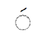
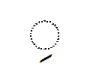
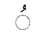

Arabic Vowels
This Lesson explains Arabic vowels for beginners. The Arabic word for vowels is Harakat . The singular form of this word is Harakah . The concept of vowels in Arabic is different from Germanic languages (English, German and Dutch). We have already learned the sounds of Arabic letters (consonants) in the first lesson. Vowels in Arabic are not part of the alphabet. The Arabic word for vowels, Harakat literally means "movements". because these are in fact vowels in Arabic that give a letter the real sound (a movement). Arabic vowels are little symbols, which are written either above or below a letter.
Arabic vowels are divided into short vowels, long vowels, and then there few other Harakat which are associated with vowels. After learning Arabic vowels in this lesson, we would be able to read any Arabic word without knowing its meanings, which is our first task towards learning Arabic.
Arabic short vowels
The three short vowels in Arabic are:
-
A diagonal line above the letter. The dotted circle represents any letter in the Arabic alphabet.
 -
A diagonal line below the letter
 -
A small curl placed above the letter

The names of these three symbols (vowels) are:
-
Fatha
-
Kasra
-
Damma
Arabic vowels and consonants
- Fatha ـَ produces a sound similar to English vowel “a”.
- Kasra ـِ produces a sound similar to the English vowel “i”.
- Damma ـُ produces a sound similar to the English vowel “u”.
However, as described earlier they have no existence of their own i.e. they always need a consonant to which they give a sound.
Following is the Arabic vowels chart containing complete details of Arabic vowels and consonants along with their sounds. Each Arabic consonant is explained with combinations of three short vowels.
ا
When the vowel fatha ـَ is placed over the letter ا it produces a sound “a”. (Please read the below equation from right to left. Remember Arabic is written from right to left?)
ـَ + ا ⇜ اَ
When the vowel Kasra ـِ is placed under the letter ا it produces a sound “e”.
ـِ + ا ⇜ اِ
When the vowel Damma ـُ is placed over the letter ا it produces a sound like the English vowel “u”.
ـُ + ا ⇜ اُ
ب
When the vowel Fatha ـَ is placed over the letter ب it produces a sound “ba”.
ـَ + ب ⇜ بَ
When the vowel Kasra ـِ is placed under the letter ب it produces a sound “bi”.
ـِ + ب ⇜ بِ
When the vowel Damma ـُ is placed over the letter ب it produces a sound “bu”.
ـُ + ب ⇜ بُ
ت
When the vowel Fatha ـَ is placed over the letter ت it produces a sound “ta”.
ـَ + ت ⇜ تَ
When the vowel Kasra ـِ is placed under the letter ت it produces a sound “ti”.
ـِ + ت ⇜ تِ
When the vowel Damma ـُ is placed over the letter ت it produces a sound “tu”.
ـُ + ت ⇜ تُ
ث
When the vowel Fatha ـَ is placed over the letter ث it produces a sound “sa”.
ـَ + ث ⇜ ثَ
When the vowel Kasra ـِ is placed under the letter ث it produces a sound “si”.
ـِ + ث ⇜ ثِ
When the vowel Damma ـُ is placed over the letter ث it produces a sound “su”.
ـُ + ث ⇜ ثُ
ج
When the vowel Fatha ـَ is placed over the letter ج it produces a sound “ja”.
ـَ + ج ⇜ جَ
When the vowel Kasra ـِ is placed under the letter ج it produces a sound “ji”.
ـِ + ج ⇜ جِ
When the vowel Damma ـُ is placed over the letter ج it produces a sound “ju”.
ـُ + ج ⇜ جُ
ح
When the vowel Fatha ـَ is placed over the letter ح it produces a sound “ha”.
ـَ + ح ⇜ حَ
When the vowel Kasra ـِ is placed under the letter ح it produces a sound “hi”.
ـِ + ح ⇜ حِ
When the vowel Damma ـُ is placed over the letter ح it produces a sound “hu”.
ـُ + ح ⇜ حُ
خ
When the vowel Fatha ـَ is placed over the letter خ it produces a sound “kha”.
ـَ + خ ⇜ خَ
When the vowel Kasra ـِ is placed under the letter ح it produces a sound “khi”.
ـِ + خ ⇜ خِ
When the vowel Damma ـُ is placed over the letter ح it produces a sound “khu”.
ـُ + خ ⇜ خُ
د
When the vowel Fatha ـَ is placed over the letter د it produces a sound “da”.
ـَ + د ⇜ دَ
When the vowel Kasra ـِ is placed under the letter د it produces a sound “di”.
ـِ + د ⇜ دِ
When the vowel Damma ـُ is placed over the letter د it produces a sound “du”.
ـُ + د ⇜ دُ
ذ
When the vowel Fatha ـَ is placed over the letter ذ it produces a sound “za”.
ـَ + ذ ⇜ ذَ
When the vowel Kasra ـِ is placed under the letter ذ it produces a sound “zi”.
ـِ + ذ ⇜ ذِ
When the vowel Damma ـُ is placed over the letter ذ it produces a sound “zu”.
ـُ + د ⇜ ذُ
ر
When the vowel Fatha ـَ is placed over the letter ر it produces a sound “ra”.
ـَ + ر ⇜ رَ
When the vowel Kasra ـِ is placed under the letter ر it produces a sound “ri”.
ـِ + ر ⇜ رِ
When the vowel Damma ـُ is placed over the letter ر it produces a sound “ru”.
ـُ + ر ⇜ رُ
ز
When the vowel Fatha ـَ is placed over the letter ز it produces a sound “za”.
ـَ + ز ⇜ زَ
When the vowel Kasra ـِ is placed under the letter ز it produces a sound “zi”.
ـِ + ز ⇜ زِ
When the vowel Damma ـُ is placed over the letter ز it produces a sound “zu”.
ـُ + ز ⇜ زُ
س
When the vowel Fatha ـَ is placed over the letter س it produces a sound “sa”.
ـَ + س ⇜ سَ
When the vowel Kasra ـِ is placed under the letter س it produces a sound “si”.
ـِ + س ⇜ سِ
When the vowel Damma ـُ is placed over the letter س it produces a sound “su”.
ـُ + س ⇜ سُ
ش
When the vowel Fatha ـَ is placed over the letter ش it produces a sound “sha”.
ـَ + ش ⇜ شَ
When the vowel Kasra ـِ is placed under the letter ش it produces a sound “shi”.
ـِ + ش ⇜ شِ
When the vowel Damma ـُ is placed over the letter ش it produces a sound “shu”.
ـُ + ش ⇜ شُ
ص
When the vowel Fatha ـَ is placed over the letter ص it produces a sound “sa”.
ـَ + ص ⇜ صَ
When the vowel Kasra ـِ is placed under the letter ص it produces a sound “si”.
ـِ + ص ⇜ صِ
When the vowel Damma ـُ is placed over the letter ص it produces a sound “su”.
ـُ + ص ⇜ صُ
ض
When the vowel Fatha ـَ is placed over the letter ض it produces a sound “dha”.
ـَ + ض ⇜ ضَ
When the vowel Kasra ـِ is placed under the letter ض it produces a sound “dhi”.
ـِ + ض ⇜ ضِ
When the vowel Damma ـُ is placed over the letter ض it produces a sound “dhu”.
ـُ + ض ⇜ ضُ
ط
When the vowel Fatha ـَ is placed over the letter ط it produces a sound “ta”.
ـَ + ط ⇜ طَ
When the vowel Kasra ـِ is placed under the letter ط it produces a sound “ti”.
ـِ + ط ⇜ طِ
When the vowel Damma ـُ is placed over the letter ط it produces a sound “tu”.
ـُ + ط ⇜ طُ
ظ
When the vowel Fatha ـَ is placed over the letter ظ it produces a sound “za”.
ـَ + ظ ⇜ ظَ
When the vowel Kasra ـِ is placed under the letter ظ it produces a sound “zi”.
ـِ + ظ ⇜ ظِ
When the vowel Damma ـُ is placed over the letter ظ it produces a sound “zu”.
ـُ + ظ ⇜ ظُ
ع
When the vowel Fatha ـَ is placed over the letter ع it produces a sound “a”.
ـَ + ع ⇜ عَ
When the vowel Kasra ـِ is placed under the letter ع it produces a sound “i”.
ـِ + ع ⇜ عِ
When the vowel Damma ـُ is placed over the letter ع it produces a sound “u”.
ـُ + ع ⇜ عُ
غ
When the vowel Fatha ـَ is placed over the letter غ it produces a sound “gha”.
ـَ + غ ⇜ غَ
When the vowel Kasra ـِ is placed under the letter غ it produces a sound “ghi”.
ـِ + غ ⇜ غِ
When the vowel Damma ـُ is placed over the letter غ it produces a sound “ghu”.
ـُ + غ ⇜ غُ
ف
When the vowel Fatha ـَ is placed over the letter ف it produces a sound “fa”.
ـَ + ف ⇜ فَ
When the vowel Kasra ـِ is placed under the letter ف it produces a sound “fi”.
ـِ + ف ⇜ فِ
When the vowel Damma ـُ is placed over the letter ف it produces a sound “fu”.
ـُ + ف ⇜ فُ
ق
When the vowel Fatha ـَ is placed over the letter ق it produces a sound “qa”.
ـَ + ق ⇜ قَ
When the vowel Kasra ـِ is placed under the letter ق it produces a sound “qi”.
ـِ + ق ⇜ قِ
When the vowel Damma ـُ is placed over the letter ق it produces a sound “qu”.
ـُ + ق ⇜ قُ
ك
When the vowel Fatha ـَ is placed over the letter ك it produces a sound “ka”.
ـَ + ك ⇜ كَ
When the vowel Kasra ـِ is placed under the letter ك it produces a sound “ki”.
ـِ + ك ⇜ كِ
When the vowel Damma ـُ is placed over the letter ك it produces a sound “ku”.
ـُ + ك ⇜ كُ
ل
When the vowel Fatha ـَ is placed over the letter ل it produces a sound “la”.
ـَ + ل ⇜ لَ
When the vowel Kasra ـِ is placed under the letter ل it produces a sound “li”.
ـِ + ل ⇜ لِ
When the vowel Damma ـُ is placed over the letter ل it produces a sound “lu”.
ـُ + ل ⇜ لُ
م
When the vowel Fatha ـَ is placed over the letter م it produces a sound “ma”.
ـَ + م ⇜ مَ
When the vowel Kasra ـِ is placed under the letter م it produces a sound “mi”.
ـِ + م ⇜ مِ
When the vowel Damma ـُ is placed over the letter م it produces a sound “mu”.
ـُ + م ⇜ مُ
ن
When the vowel Fatha ـَ is placed over the letter ن it produces a sound “na”.
ـَ + ن ⇜ نَ
When the vowel Kasra ـِ is placed under the letter ن it produces a sound “ni”.
ـِ + ن ⇜ نِ
When the vowel Damma ـُ is placed over the letter ن it produces a sound “nu”.
ـُ + ن ⇜ نُ
ﻩ
When the vowel Fatha ـَ is placed over the letter ﻩ it produces a sound “ha”.
ـَ + ﻩ ⇜ ﻩَ
When the vowel Kasra ـِ is placed under the letter ﻩ it produces a sound “hi”.
ـِ + ﻩ ⇜ ﻩِ
When the vowel Damma ـُ is placed over the letter ﻩ it produces a sound “hu”.
ـُ + ﻩ ⇜ ﻩُ
و
When the vowel Fatha ـَ is placed over the letter و it produces a sound “wa”.
ـَ + و ⇜ وَ
When the vowel Kasra ـِ is placed under the letter و it produces a sound “wi”.
ـِ + و ⇜ وِ
When the vowel Damma ـُ is placed over the letter و it produces a sound “wu”.
ـُ + و ⇜ وُ
ء
The letter ء is normally written above or below other letters. If it comes alone the sound same as of letter alif ا
ي
When the vowel Fatha ـَ is placed over the letter ي it produces a sound “ya”.
ـَ + ي ⇜ يَ
When the vowel Kasra ـِ is placed under the letter ي it produces a sound “yi”.
ـِ + ي ⇜ يِ
When the vowel Damma ـُ is placed over the letter ي it produces a sound “yu”.
ـُ + ي ⇜ يُ
Exercise
Perform the exercise in the following manner.
- Please listen to the following Arabic words and repeat them with your voice.
- Then try to pronounce these words without playing the given voice.
- Write down these on paper.
Following words are meaningful Arabic words but at this level, we don't want to know their meanings. We just want to read these words correctly.
⇜ فَعَلَ
⇜ فُعِلَ
⇜ ذَهَبَ
⇜ جَمَعَ
⇜ جُمِعَ
⇜ كَتَبَ
⇜ كُتِبَ
⇜ شَرِبَ
⇜ شُرِبَ
⇜ هُوَ
⇜ هِيَ
⇜ رَفَعَ
⇜ رُفِعَ
⇜ أَكَلَ
Letter ء with fatah, placed above the letter alif أَ produces the same sound as اَ.
Thus, أَ is just another way of writing اَ.
The explanation of ء is given in lesson 5, after learning all the pronunciation rules.
⇜ طَلَبَ
⇜ طُلِبَ
⇜ عَرَفَ
⇜ نَسِيَ
⇜ قَدَرَ
⇜ سَأَلَ
⇜ سُئِلَ
Here ء is not sitting above or below any other letter. In such conditions ء sounds similar to ا.
Thus, سُئِلَ and سُإِلَ have same sound.
⇜ نَظَرَ
⇜ حَمَلَ
⇜ كَرِهَ
⇜ فَتَحَ
⇜ فُتِحَ
⇜ غَلَقَ
⇜ وَقَفَ
⇜ وُقِفَ
⇜ دَخَلَ
⇜ دُخِلَ
⇜ خَرَجَ
⇜ رَكَبَ
⇜ ضَحِكَ